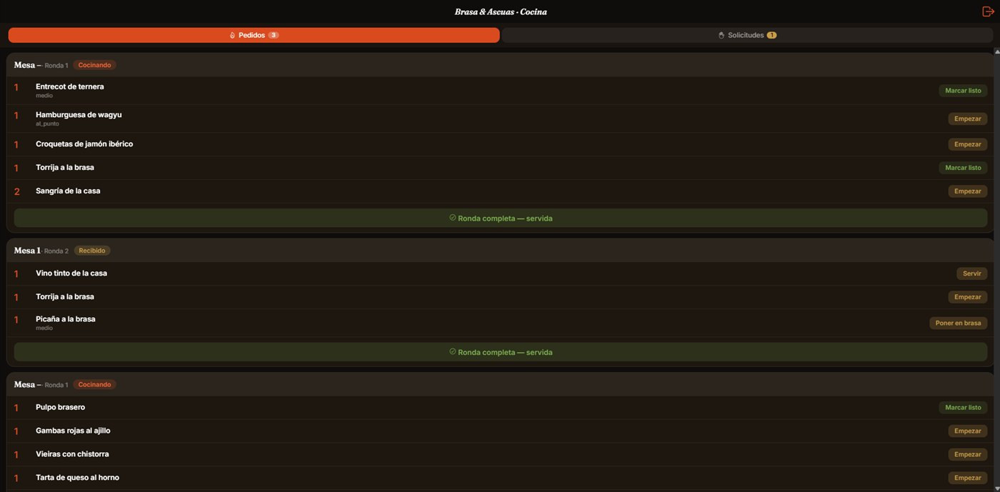
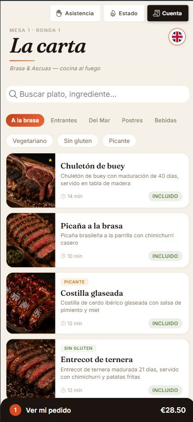
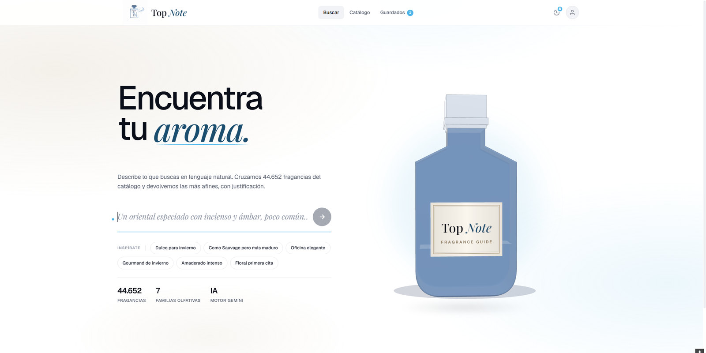

Una web que trae clientes
Rápida, clara y preparada para aparecer en Google, para que quien te busque te encuentre y sepa en diez segundos qué ofreces y cómo contactarte.
Webs y aplicaciones a medida para comercios: pedidos, reservas y pagos, entregados funcionando.
Una web rápida y clara, que da confianza y aparece en Google.
Pedidos, reservas y pagos, en tiempo real.
Tus datos y tus clientes, tuyos. Sin comisiones de terceros.
Cuéntame qué necesita tu negocio y te digo cómo lo construyo.

Soy desarrollador full-stack en Valencia. Acabo de terminar el grado superior de Desarrollo de Aplicaciones Multiplataforma y por el camino he construido tres proyectos completos de principio a fin: un sistema de pedidos y pagos, una web corporativa que está publicada para una empresa real y un buscador con inteligencia artificial.
Trabajar conmigo tiene una ventaja simple: hablas siempre con la persona que escribe el código. Sin intermediarios y sin que tu mensaje se pierda por el camino.
Brasa y Ascuas es mi proyecto de fin de grado, construido de arriba abajo: se escanea un QR en la mesa, se pide y se paga desde el móvil, y la comanda aparece al instante en el panel del personal. Está publicado y puedes probarlo tú mismo.


Rápida, clara y preparada para aparecer en Google, para que quien te busque te encuentre y sepa en diez segundos qué ofreces y cómo contactarte.
Cobra desde tu propia web o app, sin depender de plataformas que se llevan comisión de cada venta.
Paneles y aplicaciones para tu día a día: inventario, turnos, comandas, lo que tu negocio necesite controlar.
Lo que se ve, lo que trabaja y lo que se guarda. Mi oficio es construir las tres y entregarlas encajadas. Mantén pulsado y ensámblalo tú.
Me cuentas tu negocio y lo que te falta. Yo traduzco eso a una solución concreta.
Sabes lo que cuesta y cuándo lo tienes antes de decidir nada. Sin contadores que corren.
El código y el dominio son tuyos desde el día uno. Podrás contactarme en cualquier momento si me necesitas.
Mi proyecto de fin de grado: pedidos por QR con pagos integrados, comandas en tiempo real y panel de administración. Un sistema completo que enseña exactamente el tipo de software que desarrollo.
Web corporativa para una empresa de software de gestión de residuos. Diseñada, construida y publicada, hoy es su cara en internet.

Buscador inteligente sobre un catálogo de 30.000 perfumes: describes lo que buscas con tus palabras y la IA te recomienda con razones. La misma tecnología sirve para cualquier catálogo de productos.

Depende del tamaño del proyecto, y por eso no te doy una cifra al aire: te doy un presupuesto cerrado por escrito después de escucharte. Una web sencilla y un sistema de pedidos completo no cuestan lo mismo, pero en los dos casos sabrás el número exacto antes de decidir.
La fecha de entrega va cerrada en la propuesta, junto al precio. Si me comprometo a un día, es ese día.
Sí. Te entrego un panel para cambiar tus textos, precios y fotos sin tocar código, y te enseño a usarlo el día de la entrega.
La reviso gratis y te digo con claridad si conviene arreglarla o rehacerla. A veces la respuesta es que no hace falta rehacer nada, y también te lo diré.
Explicame qué necesitas y qué te falta. Contacto contigo sin compromiso y con lenguaje claro.